Abra o Flowlab e entre em MY GAMES


O clipe repete sozinho. Repare onde o cursor vai antes de clicar.
Foto da tela.
Abra o navegador em flowlab.io e entre com a sua conta.
No alto da página, clique em My Games. Aparecem os jogos que você já fez.
- Não lembro a senha
- Chame o professor. Não crie conta nova: os seus jogos estão na antiga.
- A lista está vazia
- Confira se entrou com a mesma conta das outras aulas.
Crie um jogo novo


O clipe repete sozinho. Repare onde o cursor vai antes de clicar.
Foto da tela.
Clique no botão verde New Game, no canto de cima à direita da lista.
Abre uma tela com os tipos de projeto.
- Não acho o New Game
- Ele é o único botão verde da página, no alto à direita.
Escolha o PROJETO VAZIO


O clipe repete sozinho. Repare onde o cursor vai antes de clicar.
Foto da tela.
Na tela dos tipos, clique em Empty Project — o projeto vazio.
Abre o editor com a folha branca quadriculada.
- Escolhi outro e veio um jogo pronto
- Volte em My Games, apague esse e comece pelo Empty Project.
Pinte o céu
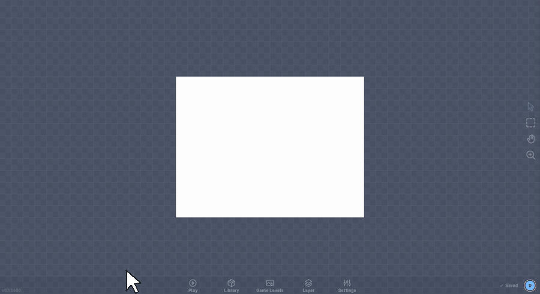
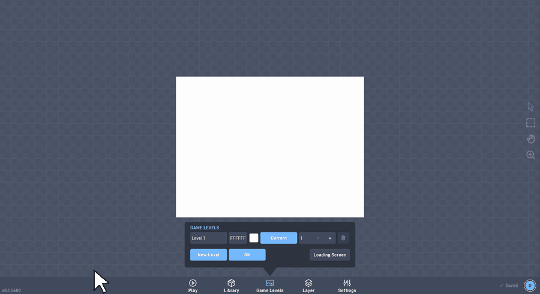
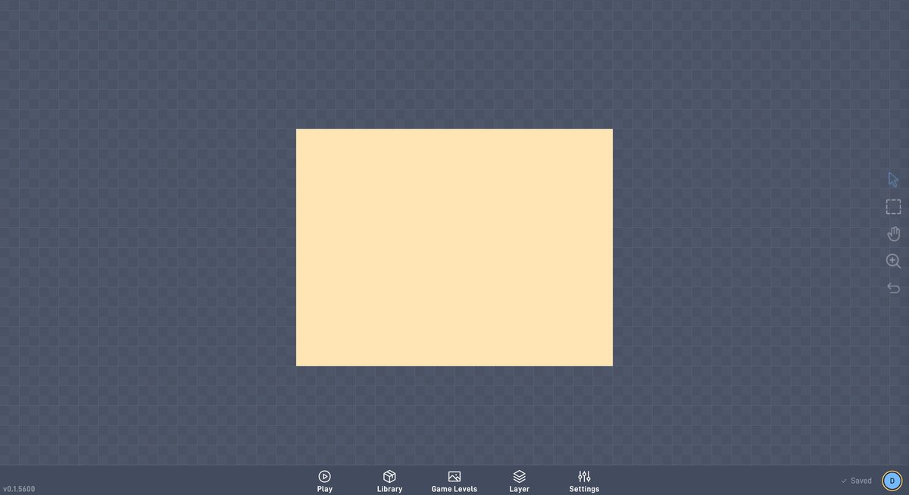
O clipe repete sozinho. Repare onde o cursor vai antes de clicar.
Foto da tela.
Clique em Game Levels, na fileira de baixo. Ao lado do nome Level 1 há um campo escrito FFFFFF.
Clique nele, apague, escreva FFE5B4 e aperte Enter.
Este tom claro não é enfeite: o número do cronômetro nasce salmão, e em céu escuro ninguém o lê.
- Digitei e não mudou
- Aperte Enter depois de escrever. Sem ele o campo não vale.
Crie o corredor
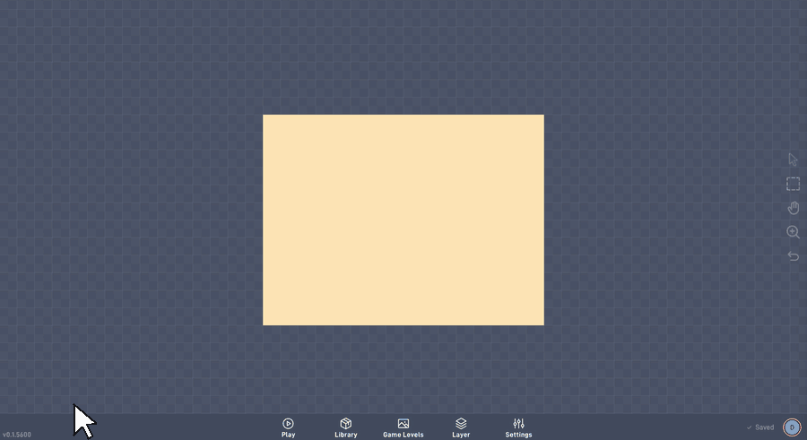
O clipe repete sozinho. Repare onde o cursor vai antes de clicar.
Foto da tela.
Clique uma vez dentro da folha clara, na parte de baixo, bem à esquerda — é a largada.
Abre a roda com Create e Cancel.
- Cliquei fora da folha
- Clique dentro do retângulo colorido. Fora dele não nasce objeto.
Escolha CREATE
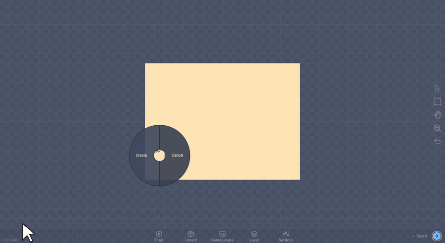
O clipe repete sozinho. Repare onde o cursor vai antes de clicar.
Foto da tela.
Na roda que abriu, clique em Create, na metade de cima.
Abre o painel do objeto novo.
- Cliquei em Cancel sem querer
- Clique na casa de novo e escolha Create.
Escreva CORREDOR nos dois campos
Foto da tela.
No campo Name, escreva Corredor e aperte Tab. No campo Type, escreva Corredor também.
O Type é o nome que a bandeira vai procurar quando perguntar quem encostou em mim?.
- Escrevi só no Name
- Clique no campo Type e escreva lá também.
- Escrevi com acento
- Escreva sem acento. Acento em nome de peça dá problema mais para a frente.
Escolha o desenho do corredor
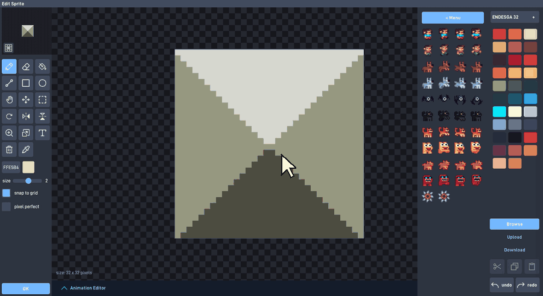
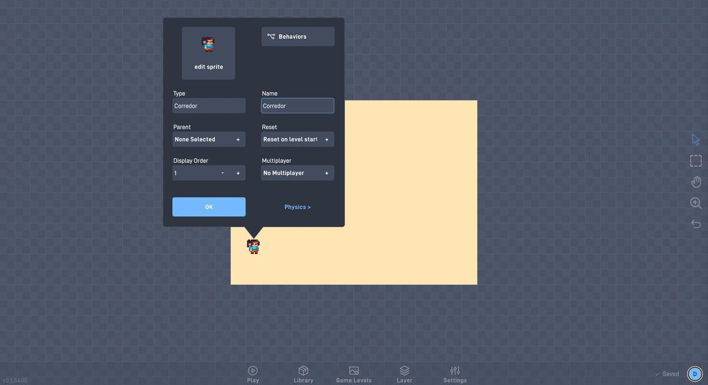
O clipe repete sozinho. Repare onde o cursor vai antes de clicar.
Foto da tela.
Clique no quadrado edit sprite, à esquerda do painel.
1. Clique em Browse, embaixo da paleta de cores.
2. Se aparecer o botão azul < Menu no alto, clique nele.
3. Clique em Flowlab Sprites e depois na faixa azul Characters.
4. Clique no primeiro boneco, no canto de cima à esquerda.
Feche no OK, no canto de baixo à esquerda.
- Não acho o Browse
- Ele fica embaixo da paleta de cores, na coluna da direita.
- Cliquei e não mudou nada
- Clique bem em cima da figura, não no espaço entre elas.
A física do corredor
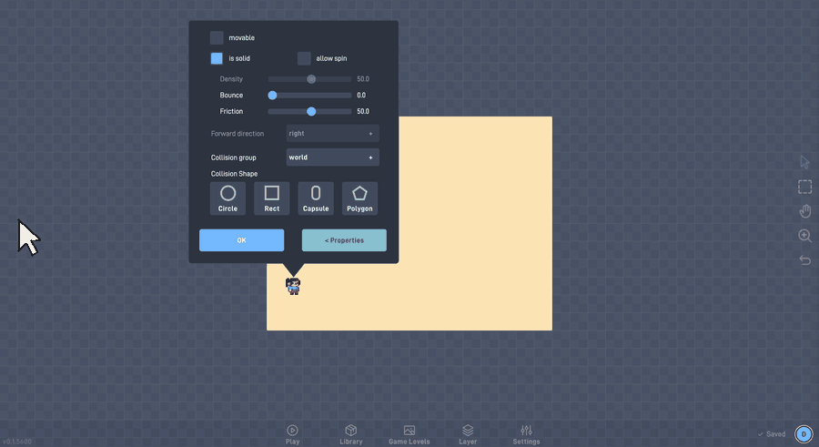
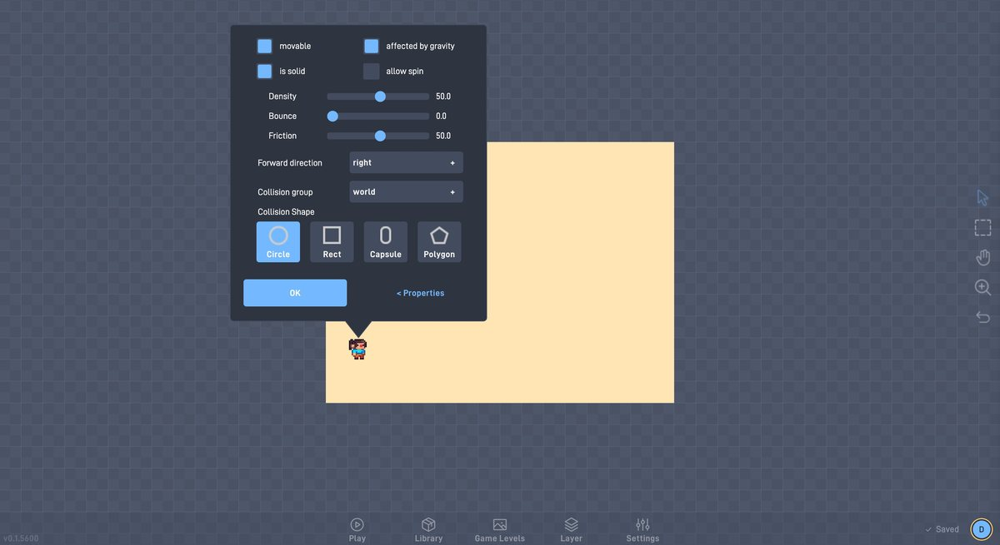
O clipe repete sozinho. Repare onde o cursor vai antes de clicar.
Foto da tela.
No painel, clique em Physics >, no canto de baixo à direita.
1. movable — marque.
2. affected by gravity — deixe marcada.
Feche no OK azul.
- Não acho Physics
- É um texto azul claro, pequeno, no canto de baixo à direita do painel.
Faça o corredor correr e pular
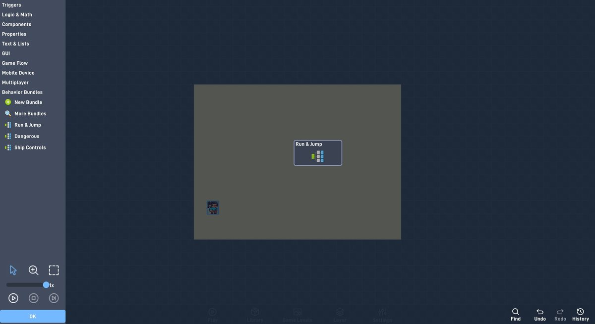
Foto da tela.
Com o corredor aberto, clique em Behaviors.
Na coluna da esquerda, lá embaixo, clique em Behavior Bundles e arraste o Run & Jump para o meio da mesa.
É o mesmo pacote das aulas 2, 6 e 7. Espere uns segundos antes de fechar.
- Arrastei e não caiu nada
- Solte no meio da mesa, longe da beirada.
- Não acho Behavior Bundles
- É o último item da coluna da esquerda. Role até o fim.
Faça o chão COM BURACOS
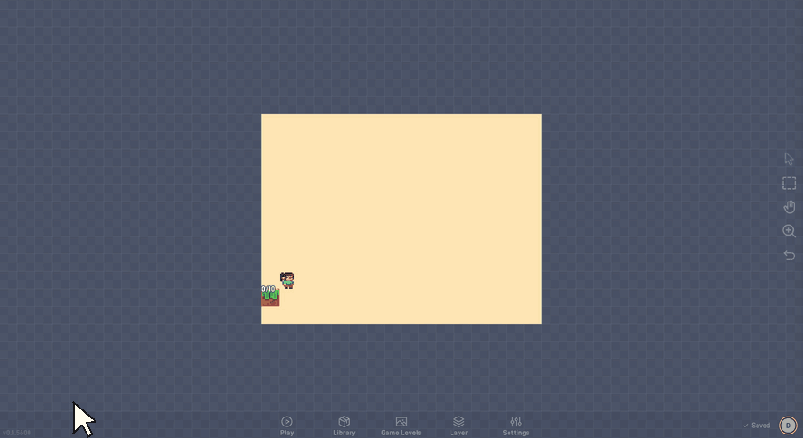
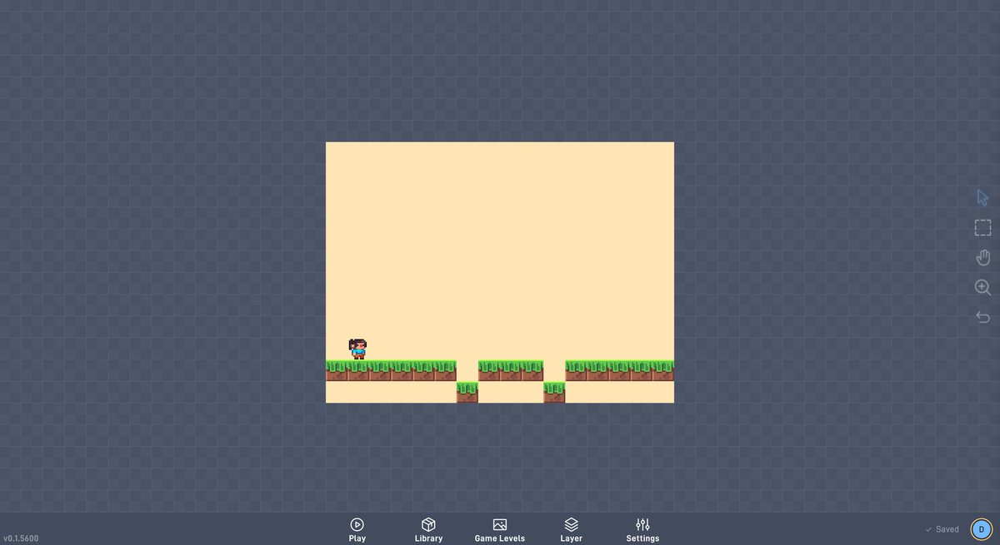
O clipe repete sozinho. Repare onde o cursor vai antes de clicar.
Foto da tela.
Feche as duas telas. Clique na casa do canto de baixo à esquerda e escolha Create. Em Name e em Type escreva Chao. Em edit sprite, pelo Browse, pegue o primeiro bloco de Flowlab Sprites › Blocks. Feche no OK.
Agora clone a fileira até a ponta direita — mas pule duas casas no caminho, deixando dois buracos.
E, embaixo de cada buraco, clone uma casa na fileira de baixo. Esse fundo é o que faz o buraco custar tempo em vez de acabar o jogo: quem cai, cai no fundo e sai pulando.
Clique no chão, escolha Clone, clique em todas as casas que você quer, e termine em done cloning.
- Esqueci o fundo e o boneco sumiu
- Sem fundo ele cai para fora do nível e some. Clone a casa de baixo.
- Não consigo sair do buraco
- Corra e pule ao mesmo tempo: parado, o pulo sobe no lugar.
- Cliquei numa casa errada
- Clique nela e escolha Delete.
Levante a BANDEIRA no fim
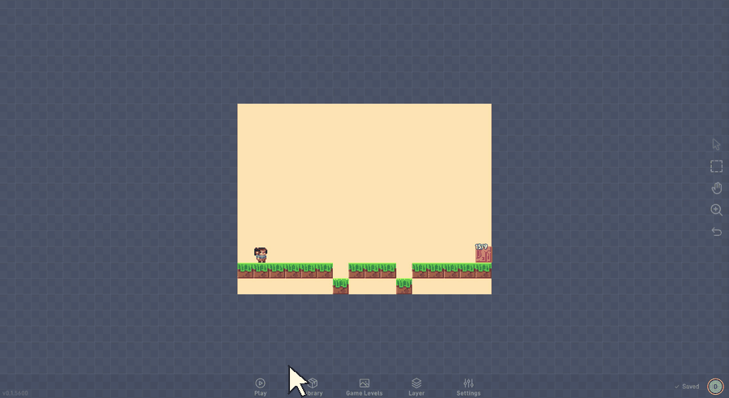
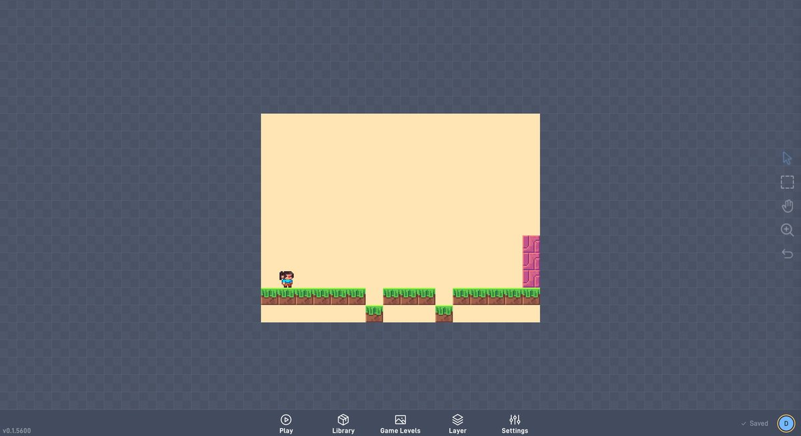
O clipe repete sozinho. Repare onde o cursor vai antes de clicar.
Foto da tela.
Clique na casa do chão da ponta direita e escolha Create. Escreva Bandeira nos dois campos.
Em edit sprite, pelo Browse, em Flowlab Sprites › Blocks, pegue um bloco de cor diferente do chão — ele marca a chegada.
Agora clique nela, escolha Clone e clique nas duas casas acima. Termine em done cloning.
Três andares, e não um: com a bandeira baixinha dá para pular por cima dela — e quem pula por cima cai para fora do jogo sem nunca encostar na chegada.
Não mexa na física dela. A bandeira fica parada, e a única coisa que ela vai fazer é perceber quando você encostar.
- A bandeira caiu
- Você marcou movable nela. Desmarque: a bandeira não se mexe.
- Consigo pular por cima
- Faltou um andar. Clone mais uma casa para cima.
Jogue o percurso, ainda sem relógio
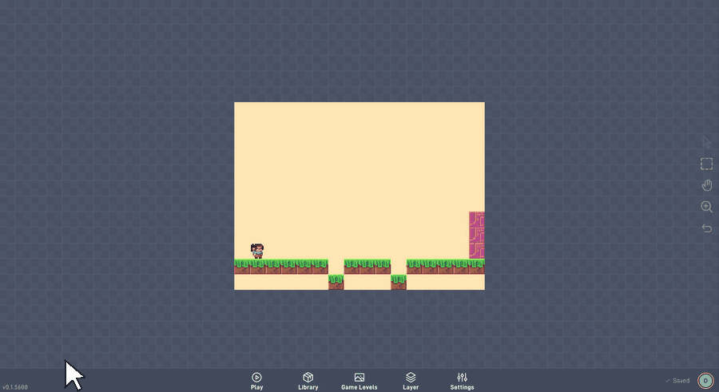
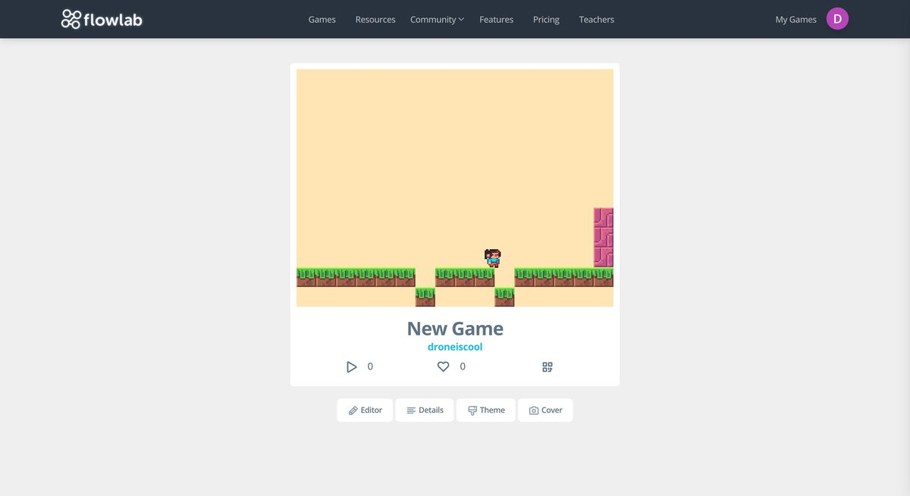
O clipe repete sozinho. Repare onde o cursor vai antes de clicar.
Foto da tela.
Feche as duas telas e clique em Play.
Clique uma vez dentro do jogo e corra até a bandeira, pulando os buracos. Volte ao editor quando chegar.
Guarde na cabeça quanto tempo achou que levou. No próximo passo o jogo passa a contar por você — e quase sempre o número é maior do que a gente imagina.
- O boneco não anda
- Confira o Run & Jump no passo 10.
- Caí no buraco
- Corra e pule ao mesmo tempo para sair. O buraco custa segundos — é essa a graça.
O CRONÔMETRO: um número com nome
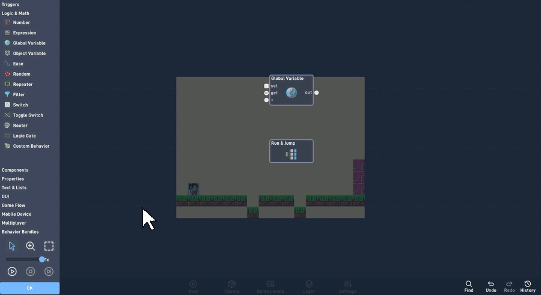
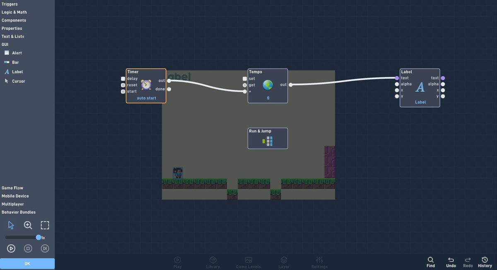
O clipe repete sozinho. Repare onde o cursor vai antes de clicar.
Foto da tela.
Clique no corredor e depois em Behaviors.
1. Em Logic & Math, arraste o Global Variable — a bolinha do mundo.
2. Clique devagar nele. No campo Global Name, clique e escolha + Add New Name. Em Name escreva Tempo, deixe o Type em Number, deixe o Default Value em 0 e clique no OK azul.
3. Em Triggers, arraste um Timer e marque Repeat Forever. O atraso é em décimos de segundo: deixe 10, que é um segundo.
4. Em GUI, arraste um Label.
Dois fios: de out do Timer até a bolinha + do Tempo — a terceira, a de baixo — e de out do Tempo até text do Label.
Repare no que mudou de nome: o bloco deixou de se chamar Global Variable e passou a se chamar Tempo. O número agora tem nome, e qualquer objeto do jogo pode chamá-lo por ele.
- O número não sobe
- O fio foi para set ou get. Ele tem de chegar na bolinha +, a de baixo.
- Não achei o + Add New Name
- Clique em cima do campo Global Name: ele é uma lista, e abre.
- O relógio corre rápido demais
- O atraso está baixo. Ele é em décimos: 10 é um segundo.
Zere o relógio no começo da partida
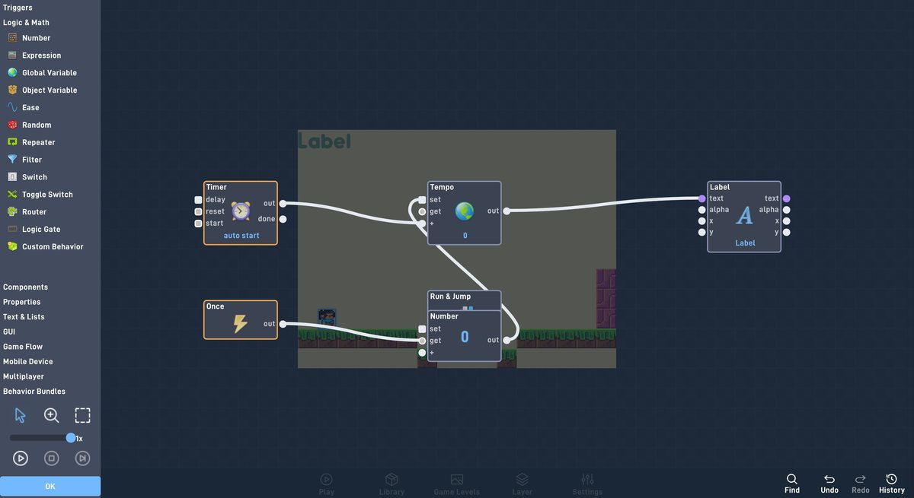
Foto da tela.
Ainda na mesa do corredor, embaixo do que você montou:
1. Em Triggers, arraste o Once — o raio. Ele dispara uma vez, quando a fase começa.
2. Em Logic & Math, arraste um Number. Deixe em 0.
Os fios: de out do Once até get do Number, e de out do Number até set do mesmo bloco Tempo que já está na mesa — a primeira bolinha dele.
Repare que o bloco do tempo tem três portas de entrada: o + embaixo, que o relógio usa para somar, e o set em cima, que o zero usa para escrever. Um bloco, duas conversas.
Sem este passo o cronômetro continuaria de onde parou: variável global não esquece. É justamente isso que vai salvar o recorde daqui a pouco.
- O relógio começa num número alto
- Faltou este passo, ou o fio não chegou no set.
- Liguei no + sem querer
- Aí o zero soma em vez de escrever. O fio tem de chegar na primeira bolinha, o set.
Jogue: o relógio corre
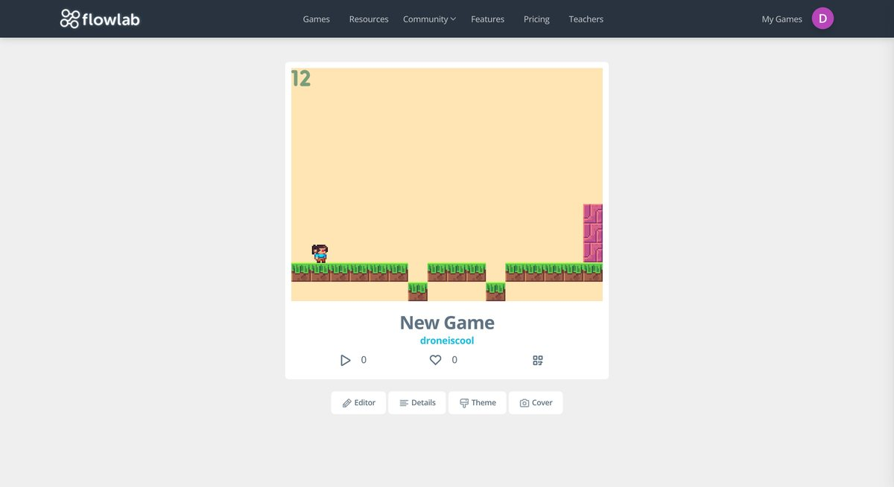
Foto da tela.
Feche as duas telas e clique em Play.
O número no canto de cima começa em 0 e sobe de um em um, sozinho — você não precisa fazer nada. Corra até a bandeira e veja em quanto parou… ou melhor: veja que ele não para. Ainda não mandamos ninguém pará-lo.
- O número não aparece
- Confira o fio do Tempo até o text do Label.
- O número está pequeno
- Clique devagar no Label e puxe a régua size para a direita.
O RECORDE, na bandeira
Foto da tela.
Volte ao editor, clique na bandeira e depois em Behaviors. A mesa dela está vazia.
1. Em Logic & Math, arraste um Global Variable. No Global Name, escolha + Add New Name, chame de Recorde e ponha Default Value 99.
2. Em Triggers, arraste um Timer e marque Repeat Forever.
3. Em GUI, arraste um Label.
Os fios: de out do Timer até get do Recorde, e de out do Recorde até text do Label.
Por que 99? Porque o recorde é o menor tempo, e qualquer corrida de verdade é menor que 99. Se começasse em 0, nenhum tempo seria menor e o recorde nunca mudaria.
- O bloco mostra 0
- Você deixou o Default Value em zero. Clique devagar nele, escolha + Add New Name e crie de novo com 99.
- Os dois números ficam um em cima do outro
- É o próximo passo que resolve.
O tempo vai para cima do corredor
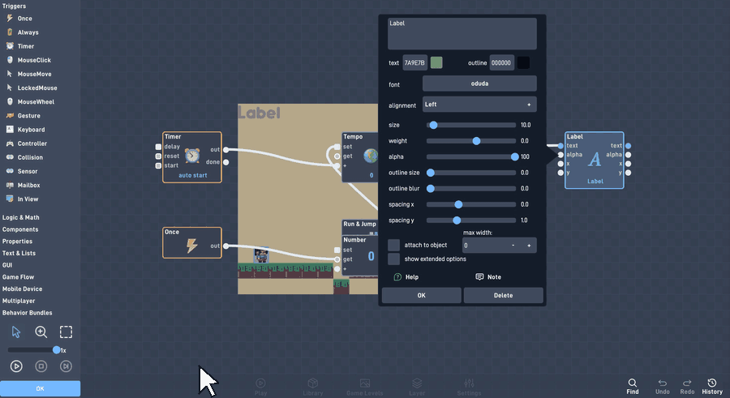
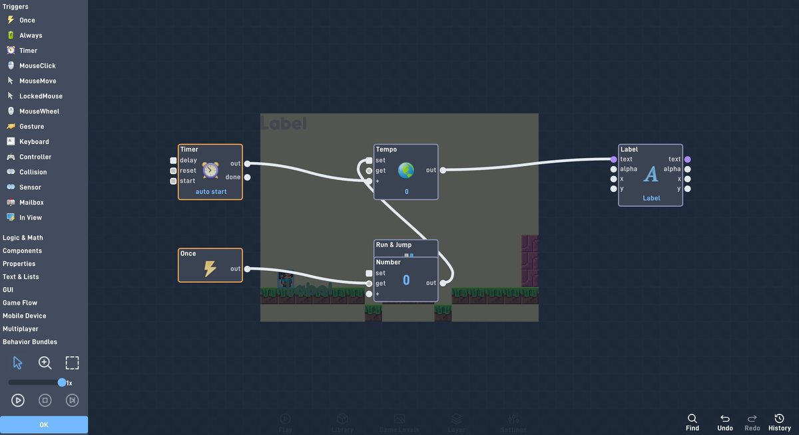
O clipe repete sozinho. Repare onde o cursor vai antes de clicar.
Foto da tela.
Os dois números nascem no mesmo canto, um em cima do outro — e assim não dá para ler nenhum dos dois.
Volte para a mesa do corredor, clique devagar no Label dele e marque a caixinha attach to object, embaixo do painel.
Pronto: o tempo passa a ser desenhado em cima do corredor, e corre com ele. O recorde continua parado no canto da tela.
Repare que não entrou bloco nenhum: foi uma caixinha. Nem toda mudança num jogo precisa de peça nova.
- Marquei e nada mudou
- Confira se marcou no Label do corredor, não no da bandeira.
- O número ficou em cima do boneco e atrapalha
- Clique devagar no Label e diminua a régua size.
A bandeira COMPARA os dois tempos
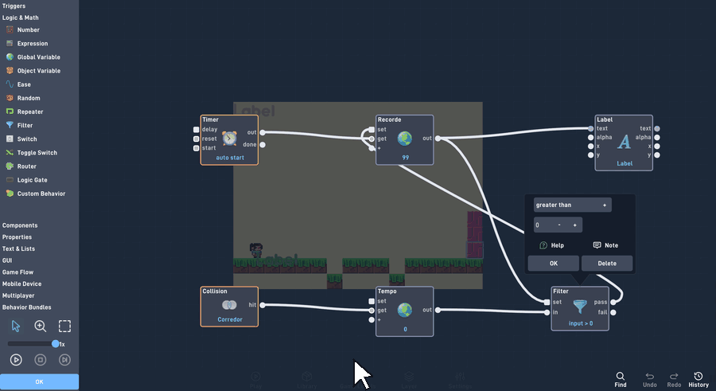
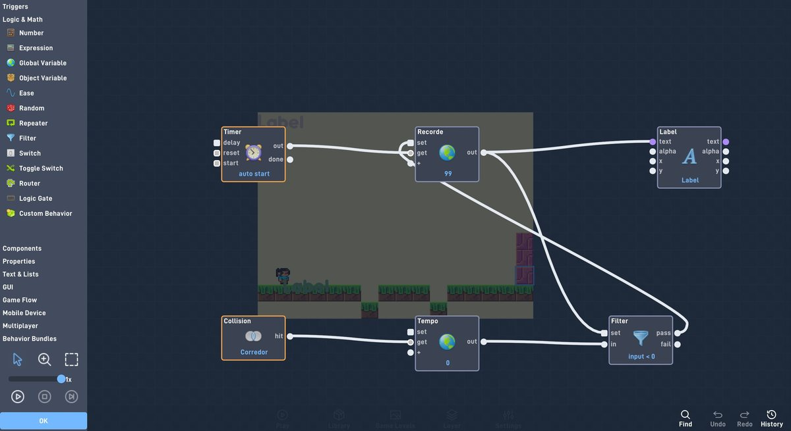
O clipe repete sozinho. Repare onde o cursor vai antes de clicar.
Foto da tela.
Ainda na mesa da bandeira. Agora o pedaço que decide:
1. Em Triggers, arraste um Collision. Clique devagar nele e, na lista Any Type, escolha Corredor.
2. Em Logic & Math, arraste um Global Variable e escolha o nome Tempo.
3. Em Logic & Math, arraste um Filter. Clique devagar nele e, no seletor que diz greater than, escolha less than. O bloco passa a mostrar input < 0.
Quatro fios:
• de hit do Collision até get do Tempo;
• de out do Tempo até in do Filter;
• de out do Recorde até set do Filter;
• de pass do Filter até set do Recorde.
Lendo em voz alta: quando o Corredor encostar em mim, pegue o Tempo; se ele for menor que o Recorde, o Recorde passa a ser ele.
Na Aula 7 o funil comparava com um número que você escreveu. Hoje ele compara com outro número do jogo — e é o fio no set que faz isso.
- O recorde vira 1 no primeiro segundo
- O fio do Tempo saiu de um bloco que recebe o + do relógio. Na bandeira, o Tempo só pode ser disparado pelo Collision.
- O recorde nunca muda
- Confira se o seletor diz less than e se o fio do pass chega no set do Recorde.
- Liguei no fail sem querer
- O fail é a bolinha de baixo, e dispara quando a conta não bate.
Volte para a largada e tente de novo
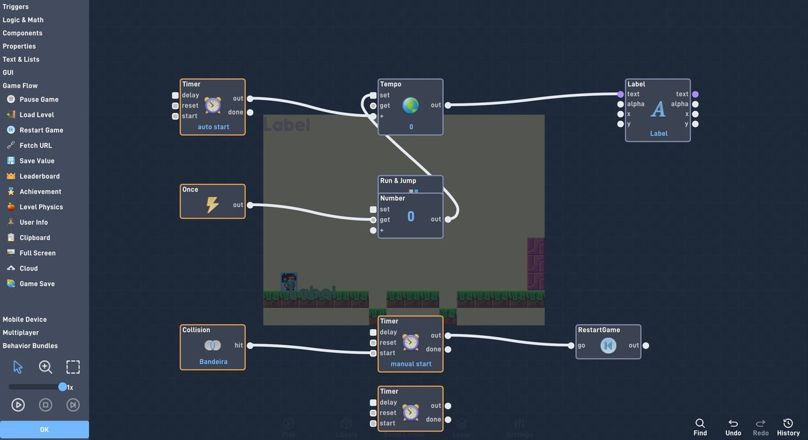
Foto da tela.
Falta uma coisa: depois de chegar, dar a volta.
Clique no corredor e depois em Behaviors.
1. Em Triggers, arraste um Collision e escolha o tipo Bandeira.
2. Em Triggers, arraste um Timer. Não marque o Repeat Forever.
3. Em Game Flow, arraste o Restart Game.
Dois fios: de hit do Collision até start do Timer, e de out do Timer até go do Restart Game.
O segundo de espera não é enfeite: é o tempinho para a bandeira guardar o recorde antes de tudo recomeçar.
E aqui está a mágica do dia: o jogo recomeça, o cronômetro volta a zero — e o recorde fica. Ele é global.
- O jogo recomeça sozinho sem eu chegar
- O fio tem de chegar no start do Timer. Sem fio ali, ele começa sozinho.
- O recorde some no recomeço
- Confira se o bloco é mesmo o Global Variable, e não o Number.
Jogue, bata o recorde e mande o link
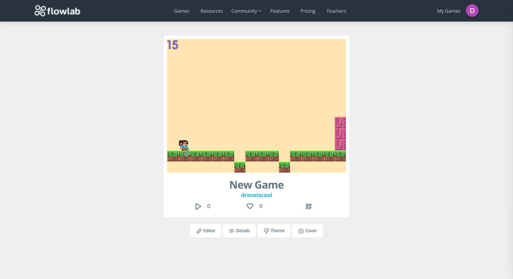
Foto da tela.
Feche as duas telas e clique em Play.
Na primeira corrida o recorde está em 99: qualquer tempo ganha dele. Na segunda, você corre contra você mesmo — e só troca o número se for mais rápido.
Para mandar para alguém: copie o endereço da barra do navegador e mande. Quem abrir vai tentar bater o seu tempo.
- O recorde não muda nunca
- O seletor do funil ficou em greater than. Volte ao passo 19.
- O recorde é sempre o último tempo
- O fio do Recorde até o set do funil está faltando: sem ele o funil compara com o número do painel.
- Quero mais difícil
- Ponha mais um buraco, ou afaste a bandeira. O recorde começa de novo em 99 se você trocar o Default Value.